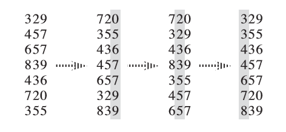
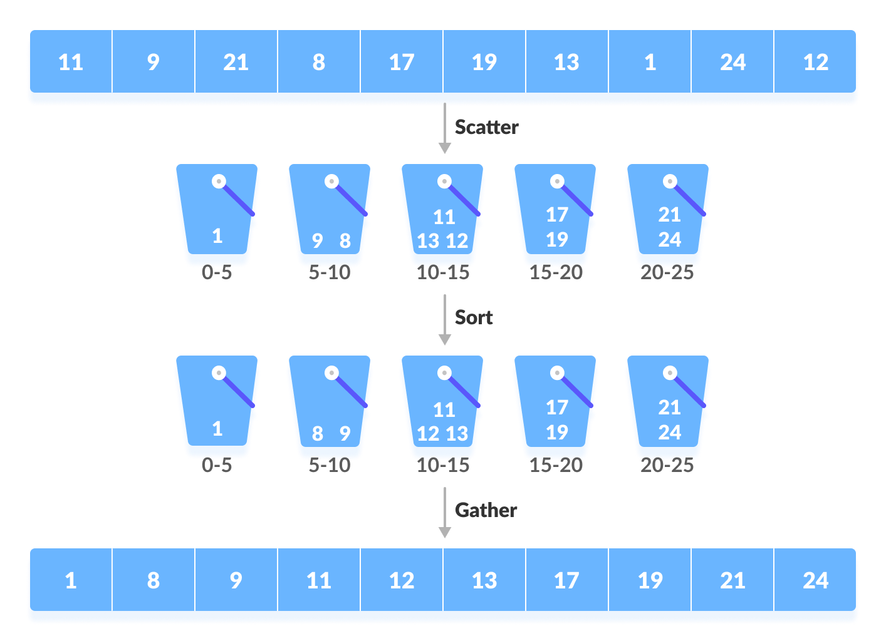

Sort¶
Assumption¶
To simplify matters, we will assume that the algorithms we describe will all be interchangeable:
- All array positions contain data to be sorted;
- The
Nis the number of elements passed to our sorting routines; - the
>and<operators exists, which can be used to place a consistant ordering on the input.
Sorting under these conditions is known as comparision-based sorting.
Sort with O(n^2) Complexity¶
Bubble Sort¶

Bubblesort is the simplest sorting algorithm that works by repeatedly swapping the adjacent elements if they are in wrong order. The algorithm is a comparison sort, is named for the way smaller or larger elements "bubble" to the top of the list. Although the algorithm is simple, it is too slow and impractical for most problems even when compared to Insertionsort. Bubblesort can be practical if the input is in mostly sorted order with some out-of-order elements nearly in position.
1 2 3 4 5 6 7 8 9 | |
Selection Sort¶

The selection sort divides the input list into two parts: a sorted sublist of items which is built up from left to right at the front (left) of the list and a sublist of the remaining unsorted items that occupy the rest of the list.
1 2 3 4 5 6 7 8 | |
Insertion Sort¶

One of the simplest sorting algorithms is the insertion sort. Insertion sort consists of N - 1 passes. For pass p = 1 through N - 1, insertion sort ensures that the elements in position 0 through p are in sorted order. Insertion sort makes use of the fact that elements in position 0 through p - 1 are already known to be in sorted order.
1 2 3 4 5 6 7 | |
Becuase of the nested loops, each of which can take N iterations, insertion sort is \(O(N^2)\). Furthermore, this bound is tight, because input in reverse order can achieve this bound.
Sort with O(nlogn) Complexity¶
Shell Sort¶

Shellsort, named after its inventor, Donald Shell, was one of the first algorithms to break the quadratic time barrier, althoungh it was not until several years after its initial discovery that a subquadratic time bound was proven. It works by comparing elements that are distant; the distance between comparisons decreases as the algorithm runs until the last phase, in which adjacent elements are compared. For this reason, Shellsort is sometimes referred to as diminishing increment sort. Shellsort uses a sequence, h1, h2,, ht, called increment sequence. Any increment sequence will do as long as h1 = 1, but some choices are better than others.
A popular(but poor) choice for increment sequence is to use the sequence suggested by Shell:
1 2 3 4 5 6 7 8 9 10 11 12 | |
The performance of Shellsort is quite acceptable in practice, even for N in the tens of thousands. The simplicity of the code makes it the algorithm of choice for sorting up to moderately large input.
Heap Sort¶
Priority queues can be used to sort in \(O(NlogN)\) time. The algorithm based on this idea is known as heapsort and gives the best Big-Oh running time we have seen so far. The basic strategy is to build a binary heap of N elements. This stage takes \(O(N)\) time. We then preform N deleteMin operations. The elements leave the heap smallest first, in sorted order. By recording these elements in a second array and then copying the array back, we sort N elements. Since each deleteMin takes \(O(logN)\) time, the total running time is \(O(NlogN)\).
The main problem with this algorithm is that it uses an extra array. Thus, the memory requirement is doubled. This could be a problem in some instances. Notice that the extra time spent copying the second array back to the first is only \(O(N)\), so that this is not likely to affect the running time significantly. The problem is space.
A clever way to avoid using a second array makes use of the fact that after each deleteMin, the heap shrinks by 1. Thus the cell that was last in the heap can be used to store the element that was just deleted.
Using this strategy, after the last deleteMin the array will contain the elements in decreasing sorted order. If we want the elements in the more typical increasing sorted order, we can change the ordering property so that the parent has a larger elements than the child. Thus, we have a max-heap.
1 2 3 4 5 6 7 8 9 10 11 12 13 14 15 16 17 18 19 20 21 22 23 | |
Merge Sort¶
Mergesort runs in \(O(NlogN)\) worse-case running time, and the number of comparisons used is nearly optimal. It is a fine example of a recursive algorithm.
The fundamental operation in this algorithm is merging two sorted lists. Because the lists are sorted, this can be done in one pass through the input, if the output is put in a third list. The basic merging algorithm takes two input array A and B, an output array C, and three counters, Actr, Bctr, and Cctr, which are initially set to the beginning of their respective arrays. The smaller of A[Actr] and B[Bctr] is copied to the next entry in C, and the appropriate counters are advanced. When either input list is exhausted, the remainder of the other list is copied to C.
1 2 3 4 5 6 7 8 9 10 11 12 13 | |
Mergesort is a classic example of the techniques used to analyze recursive routines: We have to write a recurrence relation for the running time. We will assume that N is a power of 2 so that we always split into even halves. For N = 1, the time to mergesort is constant, which we will denote by 1. Otherwise, the time to mergesort N numbers is equal to the time to do two recursive mergesort of size N/2, plus the time to merge, which is linear:
Although mergesorts running time is \(O(NlogN)\), it has the significant problem that merging two sorted lists uses linear extra memory. The additional work involved in copying to the temporary array and back, throughtout the algorithm, slows the sort considerably. This copying can be avoided by judiciously switching the roles of a and tmpArray at alternate levels of the recursion. The running time of mergesort, when compared with other \(O(NlogN)\) alternatives, depends heavily on the relative costs of comparing elements and moving elements in the array(and the temporary array). These costs are language dependent.
Quick Sort¶

As its name implies for C++, quicksort has historically been the fastest known generic sorting algorithm in practice. Its average running time is \(O(NlogN)\). It is very fast, mainly due to a very tight and highly optimized inner loop. It has \(O(N^2)\) worst-case performance, but this can be made exponentially unlikely with a little effort. By combining quicksort with heapsort, we can achieve quicksorts fast running time on almost all inputs, with heapsorts \(O(NlogN)\) worst-case running time. The quicksort algorithm is simple to understand and prove correct, although for many years it had the reputation of being an algorithm that could in theory be highly optimized but in practice was impossible to code correctly. Like mergesort, quicksort is a divide-and-conquer recursive algorithm.
The classic quicksort algorithm to sort an array S consists of the following four easy steps:
- Pick any element v in S. This called the
pivot; - Partition S-{v}(the remaining elements in S) into two disjoint groups: \(S_1 = {x \in S - {v} | x \le v}\), and \(S_x = {x \in S - {v} | x \ge v}\);
- Return {quicksort(\(S_1\)) and quicksort(\(S_2\))}.
1 2 3 4 5 6 7 8 9 10 11 | |
Sort with O(N) Complexity¶
\(O(N)\) sorting algorithms were exsiting for a long time, but they can only be used in special scenes.
Counting Sort¶
Counting sort uses an extra array cnt, the ith element of cnt is the couting number of the ith element in origin array, and at last we set the element of origin array to its proper position according to cnt.
The process is:
- Couting how many times each number in origin array occurs;
- Calculating the pre-sum of each number;
- Get the index of each number according to its times from pre-sum list.

1 2 3 4 5 6 7 8 9 10 11 12 13 14 15 16 17 18 19 20 | |
Radix Sort¶
Radix sort divides an element into k digit, and sort elements by its kth digit; after that, it does the same thing with \((k-1), (k-2), /cdots, 0\)th digit.
The main process is:
- find the maximum element of the array;
- get the radix of each element;
- loop for
max_digit_lengthtimes, and sort elements by their radix.

1 2 3 4 5 6 7 8 9 10 11 12 13 14 15 16 17 18 19 20 21 22 23 24 25 26 27 28 29 30 31 32 33 | |
Bucket Sort¶

The main process of bucket sort is:
- divide the array into
bucket_sizeinterval of rangebucket_len, each interval is call abucket; - traversal the array, put all elements to buckets;
- sort every bucket;
- merge the numbers in all buckets in order.
1 2 3 4 5 6 7 8 9 10 11 12 | |